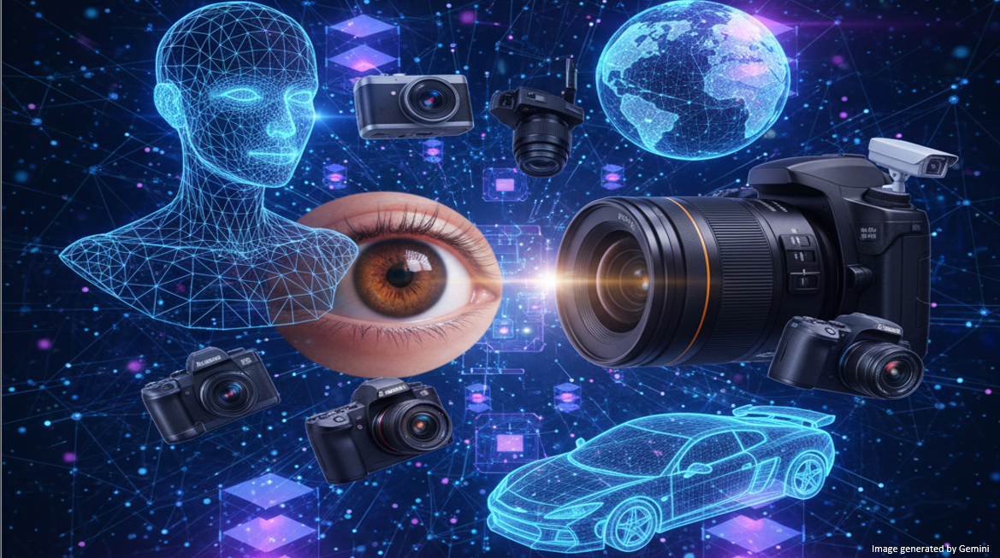

INF 417:
Computer Vision

Instuctor:
Evangelos Kalogerakis (kalogerakis AT tuc DOT gr)
Meeting times:
Tuesdays + Thursdays 6-8pm ET
Location:
Thelma Mavridou Amphitheatre
Students can also join remotely - check moodle.tuc.gr for zoom link
Lecture Notes & Announcements & Other Information:
Check moodle.tuc.gr
Course Objectives
This course covers the fundamental principles and methodologies of computer vision, with emphasis on modern AI-based visual perception systems. Topics include image formation and photometric modeling; camera geometry and calibration; light and shading; image filtering and resampling; image pyramids; edge detection; feature detection and matching; image alignment and robust estimation (RANSAC); depth recovery from stereo; multi-view geometry; structure from motion; motion estimation and optical flow. The course further covers learning-based image understanding, including convolutional neural networks, vision transformers, visual representation learning (self-supervised / contrastive learning), image classification, object detection, and image segmentation. Advanced topics include open-vocabulary recognition, vision–language models, depth estimation, 3D reconstruction, and deep learning methods for 3D shape and scene analysis using multi-view, point-based, volumetric, and graph-based representations.
Course Prerequisites
Strongly recommended courses before taking this course:
Linear Algebra (Math 102)
Multivariable Calculus (Math 103)
Artificial Intelligence (INF 311)
Class Plan
Lecture material will be available asynchronously. Coursework can be completed asynchronously. Students may attend lectures in person or watch them live via Zoom; attendance is optional. Zoom links, lecture notes, recorded videos, programming resources, and assignments will be posted on Moodle.
Week-by-week outline (tentative)
Week 1: Introduction & Image Formation
Week 2: Camera Geometry & Calibration / Light, Shading, and Color
Week 3: Image Filtering / Multi-scale Representations
Week 4: Edges & Features / Feature Matching
Week 5: Image Alignment / Robust Estimation (RANSAC)
Week 6: Stereo Vision & Multi-view Geometry / Structure from Motion
Week 7: Optical Flow / Motion Estimation
Week 8: Deep Learning for Vision: MLPs / Backpropagation and Training
Week 9: Convolutional Networks (CNNs), U-Nets, ResNets / Normalization, Overfitting, and Generalization
Week 10: Modern Vision Models: Vision Transformers / Self-supervised and Contrastive Learning
Week 11: Image Understanding Tasks: Open-vocabulary Classification, Vision–Language Models / Object Detection and Segmentation
Week 12: Learning-based 3D Vision: Depth Estimation, 3D Reconstruction / 4D Reconstruction
Week 13: 3D Shape and Scene Analysis using Multi-view, Point-based, Volumetric, and Graph-based Representations
Expectations/Requirements
- Two midterm exams
- A term project (programming assignment)
- Oral presentation of a recent state-of-the-art paper from CVPR, ECCV, or ICCV published within the previous two years. The oral presentation could be replaced with a mini-research project upon instructor's approval.
Grading Criteria
35% Midterm Exam I
35% Midterm Exam II
10% Term Project (programming assignment)
20% Oral Presentation or Mini-Research Project
(No final exam)
Scores to letter conversions:
[97.5, 100] => 10.0
[92.5, 97.5) => 9.5
[87.5, 92.5) => 9.0
[82.5, 87.5) => 8.5
[77.5, 82.5) => 8.0
[72.5, 77.5) => 7.5
[67.5, 72.5) => 7.0
[62.5, 67.5) => 6.5
[57.5, 62.5) => 6.0
[52.5, 57.5) => 5.5
[50.0, 52.5) => 5.0
Note: A course grade below 5.0 is not a passing grade.
Accommodation Statement
I am committed to providing an equal educational opportunity for all students. Students with a documented physical, psychological, or learning disability may be eligible for reasonable academic accommodations to support their success in this course. If you have a documented disability requiring accommodation, please notify me within the first month of the semester so that appropriate arrangements can be made.
Academic Honesty Statement
The integrity of the academic enterprise requires honesty in scholarship and research. Academic honesty is expected of all students enrolled in this course. Academic dishonesty includes, but is not limited to, cheating, fabrication, plagiarism, and facilitating academic dishonesty. Appropriate sanctions may be imposed on any student found to have committed an act of academic dishonesty.
COVID/Other Airborne Diseases Policy
Students who are ill with COVID-19 or other airborne diseases must not attend class in person. Students are expected to attend remotely via Zoom until they are no longer contagious.
Equity and Inclusion Statement
I am committed to fostering a culture of diversity and inclusion in which everyone is treated with dignity and respect. This course is for all students, regardless of age, background, citizenship, disability, ethnicity, family status, gender, geographic origin, language, political views, race, religion, or work experience. We each bring different skills and perspectives to the course, and we will learn from and with one another.
In both in-person and online settings, all participants are expected to uphold and promote a welcoming learning environment. Politeness, kindness, and tolerance are expected at all times. Please respect that people may hold different opinions and may approach problems in different ways. Keep unstructured critique to a minimum and ensure that any criticism is constructive. Be mindful of your own biases and avoid micro-aggressions. Listen to others and allow everyone the opportunity to participate; reflect on whether you may be dominating a conversation and make space for others to contribute.
Disruptive behavior is not welcome, and insulting, demeaning, or harassing behavior of any kind is unacceptable. In particular, behavior that excludes or marginalizes individuals or groups is not tolerated. If you feel that you have been, or are being, harassed or made uncomfortable by someone in this class, please contact me.
back to Evangelos Kalogerakis' page